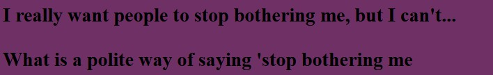
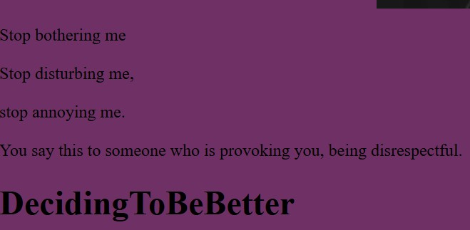
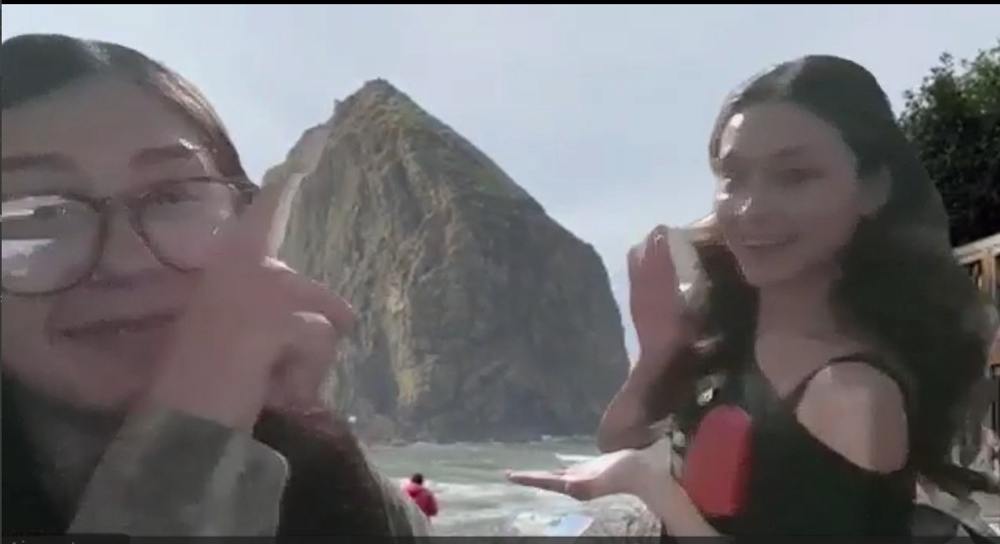
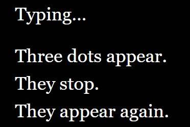
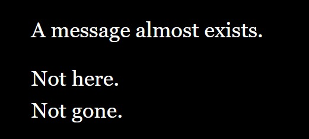

AIMEES PORTFOLIO
Project One: Decidingtobebetter

- A Flarf Poem -

<CLICKHERE
Project Two: GREENSCREEN

- A Green Screen Video placed in Oregan -
CLICKHERE
Project Three: Gap Between Messages


- A Twine Game that plays around with the concept of the space between unsent messages -
CLICKHERE